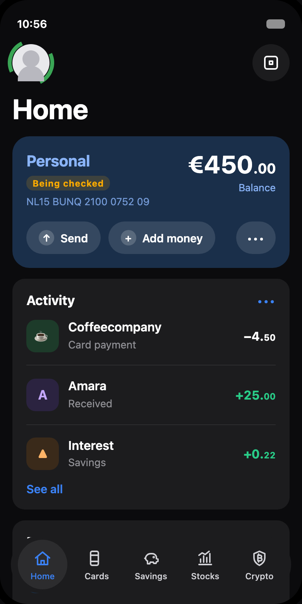
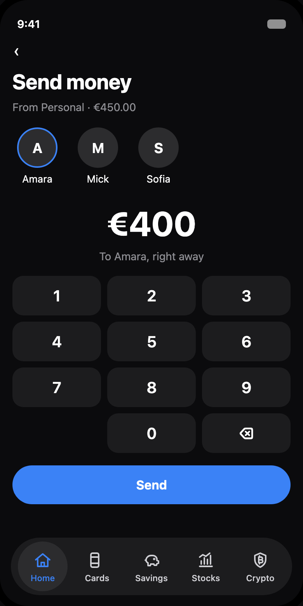
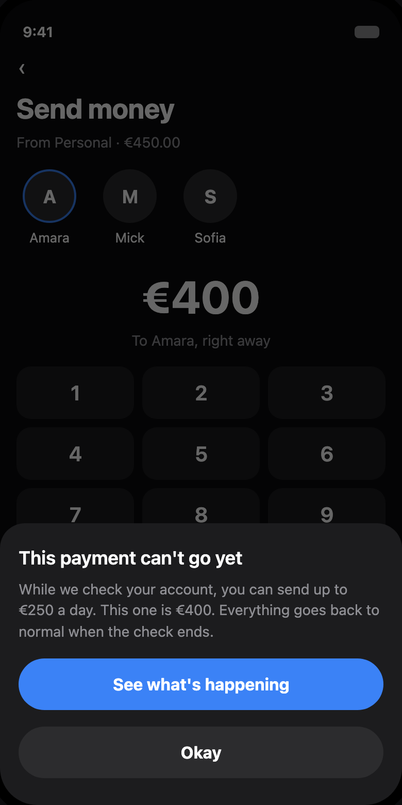
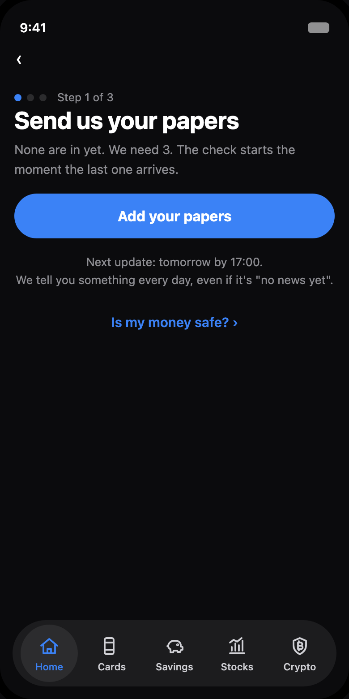
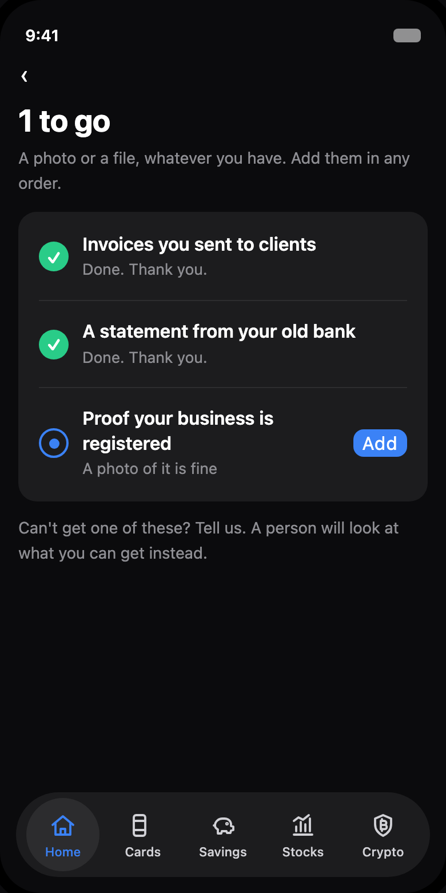
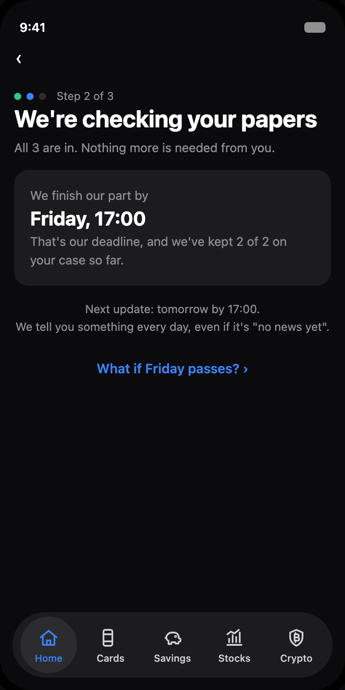
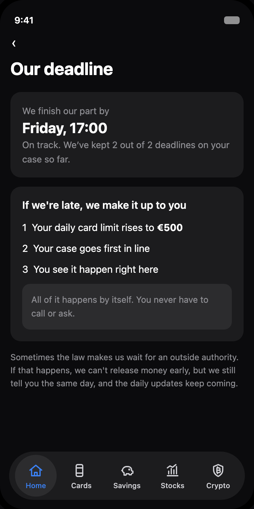
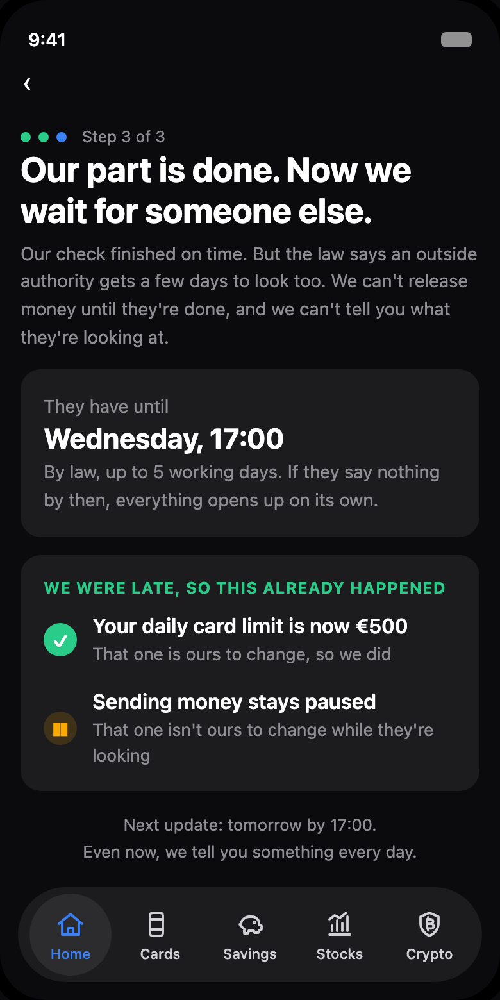
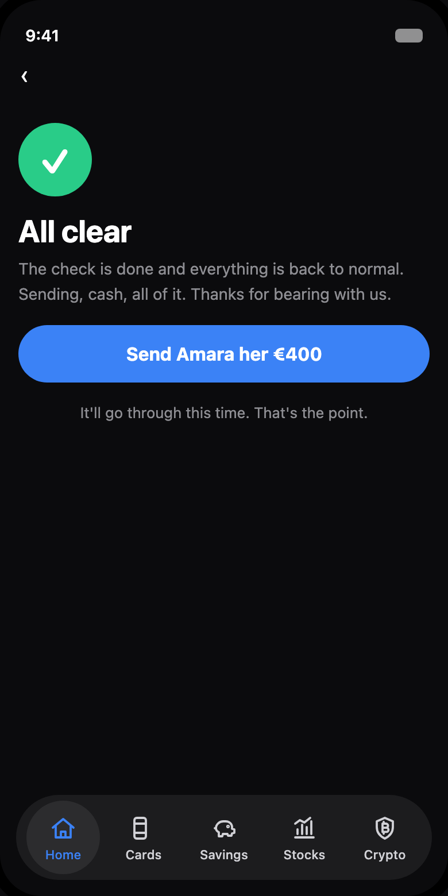

Every neobank freezes accounts; the law requires it. What no bank has designed is everything around the freeze. This is that redesign, built in bunq's own design language from 74 public complaints.
Why the problem exists, the journey tapped through screen by screen, what happens when the law extends a hold, and the architecture underneath.
Narrated. Every tap in the film presses a real button on a working prototype.
Nine moments, from an ordinary payment to everything back to normal.
Home looks completely normal. One quiet badge says the account is being checked. The user hasn't noticed yet.
€400 to Amara, like any other day. Contact, amount, send.
The payment stops. Instead of a dead decline, the app says what's paused, why, and when it ends. In the complaint record, this exact moment is where trust dies.
Step 1 of 3: send us your papers. A daily update lands even when nothing changed. Plain words, no banking jargon anywhere.
Three documents matched to the user's life, added in any order. Every screen counts the same numbers, because one case state drives them all. The app can never contradict itself.
The last paper lands and step 2 begins on its own. The bank commits to its own deadline, on screen: it finishes its part by Friday, 17:00.
If the bank misses its own deadline, the make-good fires automatically: a higher daily card limit, the case first in line, the miss shown right there. No calls, no begging.
Sometimes an outside authority gets its own legal days to look. The bank can't release money and can't say why, so it says exactly that, with their deadline shown too.
All clear, said out loud. Limits lift on their own, the badge disappears, and the €400 that opened this story goes through.









Home looks completely normal. One quiet badge says the account is being checked. The user hasn't noticed yet.
€400 to Amara, like any other day. Contact, amount, send.
The payment stops. Instead of a dead decline, the app says what's paused, why, and when it ends. In the complaint record, this exact moment is where trust dies.
Step 1 of 3: send us your papers. A daily update lands even when nothing changed. Plain words, no banking jargon anywhere.
Three documents matched to the user's life, added in any order. Every screen counts the same numbers, because one case state drives them all. The app can never contradict itself.
The last paper lands and step 2 begins on its own. The bank commits to its own deadline, on screen: it finishes its part by Friday, 17:00.
If the bank misses its own deadline, the make-good fires automatically: a higher daily card limit, the case first in line, the miss shown right there. No calls, no begging.
Sometimes an outside authority gets its own legal days to look. The bank can't release money and can't say why, so it says exactly that, with their deadline shown too.
All clear, said out loud. Limits lift on their own, the badge disappears, and the €400 that opened this story goes through.
European regulators have spent three years fining challenger banks for weak financial-crime controls, and the reflex is always the same: monitor harder, freeze faster. Legitimate users get caught, and every wrongly frozen account becomes a one-star review and a lost signup.
I coded 74 public complaints about frozen and blocked accounts, from Trustpilot, Dutch consumer platforms, forums, press coverage, and Kifid rulings. Five patterns dominate, and a complaint can carry more than one:
A customer moved €100,097 to his own account at another bank, for a house purchase. It was blocked for checks. He sent every paper promptly, got replies mostly from a chatbot, and waited ten days. He took out two short-term loans to save the purchase.Kifid, the Dutch financial complaints institute, ruled the bank had been too slow and ordered compensation, 2024.
bunq is built for people who live and work across borders, exactly the population whose financial lives look unusual to monitoring systems. bunq's best users are the ones most likely to get flagged. The hold experience isn't an edge case; it's a core user journey wearing a support-ticket costume.
One screen owns the case: which of three steps you're on, what to do, and when the next update comes. A daily update lands even when nothing changed.
Checklists matched to the user's life. Freelancers aren't asked for payslips. If a paper is impossible, a person reviews the alternative.
What we can tell you, and the one thing the law says we can't. Restricted information reads as regulation, not evasion.
The bank sets its own deadline and shows it. Miss it, and the make-good fires automatically: bank-set limits relax, the case jumps the queue, the miss is on screen.
A review pauses the risk, not the whole life. What still works is spelled out, and limits lift on their own as stages complete. No bank words anywhere: "we're checking your account" is the whole vocabulary.
One door in, one hub, four rooms. Nothing is more than one tap from the hub, and each room answers exactly one question a worried person asks, in the order they ask it.
Most of it moves the bank closer to the rules it already has.
Explaining a stopped payment is required, not just allowed. A payment provider must notify the user of a refusal and, where possible, the reasons, unless the law forbids it. A dead decline is closer to a breach than this design is.
The rules forbid revealing the trigger, a report, or an investigation. They say nothing against showing the stage, the timeline, or the next update. Everything on the case screen is process, not reason.
The human escape hatch on the document checklist is the right to human review of an automated decision with significant effects, in practice.
Two carve-outs keep the deadline mechanic honest. Deadlines are commitments to communicate, not to release: an outside authority can extend a hold, and the bank cannot release funds early however late it is. So make-goods only ever touch bank-set limits, never legally frozen money, and the app says so plainly.
Humans stay in the plumbing where the law already puts them. They're never sold as a feature, and the design never competes with automation: it gives the assistant something true to say.
This was built with no access to bunq's systems: public complaints as research, bunq's live app as the design system, and EU payment and AML law as the constraint set. It's what I'd do in the first ninety days inside, shown from outside first. If it's wrong in places only an insider could know, that's the conversation I'd like to have.
I'm a UX designer and researcher specialising in accessible, explainable financial experiences. Previously: GDS-standard government services at MHCLG, published at CHI 2024, and Ledgerline, an explainable SME credit underwriting sandbox.